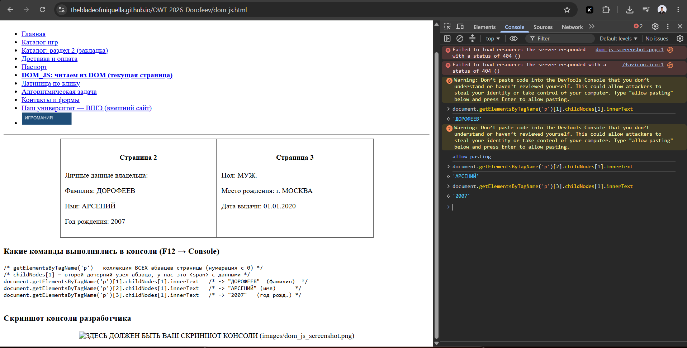

Страница 2Личные данные владельца: Фамилия: ДОРОФЕЕВ Имя: АРСЕНИЙ Год рождения: 2007 |
Страница 3Пол: МУЖ. Место рождения: г. МОСКВА Дата выдачи: 01.01.2020 |
/* getElementsByTagName('p') — коллекция ВСЕХ абзацев страницы (нумерация с 0) */
/* childNodes[1] — второй дочерний узел абзаца, у нас это <span> с данными */
document.getElementsByTagName('p')[1].childNodes[1].innerText /* -> "ДОРОФЕЕВ" (фамилия) */
document.getElementsByTagName('p')[2].childNodes[1].innerText /* -> "АРСЕНИЙ" (имя) */
document.getElementsByTagName('p')[3].childNodes[1].innerText /* -> "2007" (год рожд.) */
